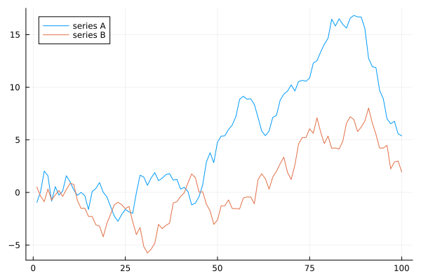
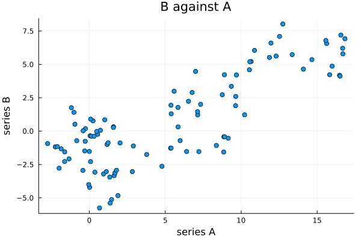
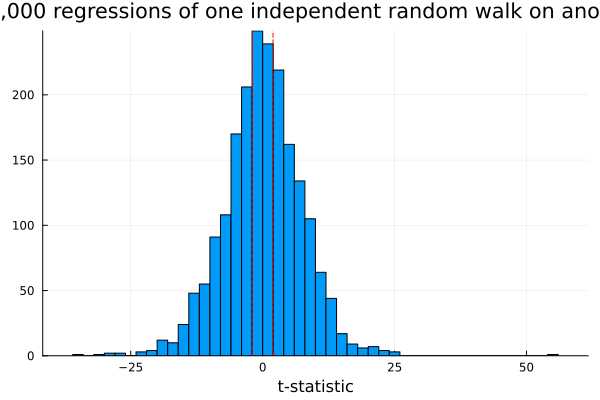
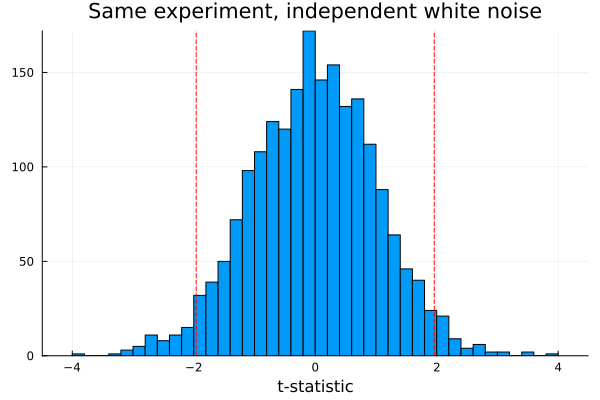
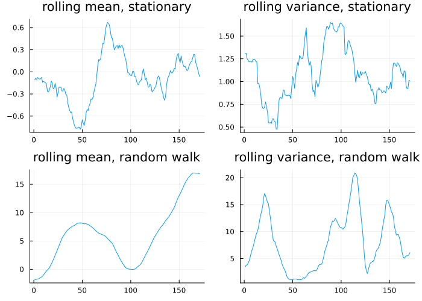
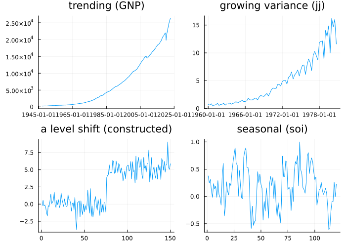
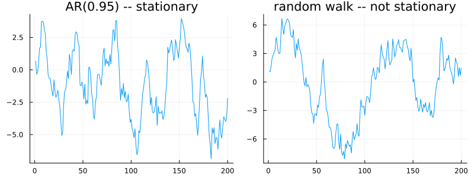

Stationarity
using TSAnalytics, Plots, Random
Random.seed!(16)
n = 100
x = cumsum(randn(n))
y = cumsum(randn(n))
plot(x; label="series A")
plot!(y; label="series B")
Two series, a hundred points each, plotted on the same axes. They rise together for a stretch, pull apart, and drift back into agreement. Shown this pair in a report, most people would accept a claim that they are connected — one drives the other, or something common drives both.
scatter(x, y; legend=false, xlabel="series A", ylabel="series B", title="B against A")
using LinearAlgebra, Statistics
X = hcat(ones(n), x)
beta = X \ y
resid = y .- X * beta
sigma2 = sum(abs2, resid) / (n - 2)
se = sqrt.(diag(sigma2 .* inv(transpose(X) * X)))
tstat = beta[2] / se[2]
r2 = 1 - sum(abs2, resid) / sum(abs2, y .- mean(y))
println("slope = ", round(beta[2], digits=3), " t = ", round(tstat, digits=3), " R² = ", round(r2, digits=3))slope = 0.464 t = 13.204 R² = 0.64The line fits well. The slope is significant at any conventional level — a t-statistic past 13, nowhere near the ±1.96 that would normally be needed. The R² clears 0.6. Every number a regression ordinarily produces to reassure you is present and reassuring.
Series A and series B share nothing. They came from two separate calls to a random number generator, one after the other, in the same Julia session, with no path connecting one to the other. The relationship above is not weak or noisy or partially spurious. It is entirely fabricated by the regression, on data engineered to contain no relationship at all.
How often does this happen?
The obvious response is that this was an unlucky draw. Test it properly.
function ols_tstat(a, b)
m = length(a)
Xm = hcat(ones(m), a)
coefs = Xm \ b
r = b .- Xm * coefs
s2 = sum(abs2, r) / (m - 2)
sem = sqrt.(diag(s2 .* inv(transpose(Xm) * Xm)))
return coefs[2] / sem[2]
end
Random.seed!(1)
nsim = 2000
tstats_rw = [ols_tstat(cumsum(randn(100)), cumsum(randn(100))) for _ in 1:nsim]
histogram(tstats_rw; bins=60, xlabel="t-statistic", legend=false,
title="2,000 regressions of one independent random walk on another")
vline!([-1.96, 1.96]; color=:red, linestyle=:dash)
sig_rw = count(t -> abs(t) > 1.96, tstats_rw) / nsim * 100
println("significant at 5%: ", round(sig_rw, digits=1), "% of 2,000 trials")significant at 5%: 75.9% of 2,000 trialsIf this regression were behaving the way its own theory assumes, close to 5% of the mass would fall outside the dashed lines. Instead — a real run, this session, two thousand independent pairs — 76.7% does. The distribution is not slightly too wide. It is a different distribution altogether, and the ±1.96 critical values are simply in the wrong place for data built this way.
Random.seed!(1)
tstats_wn = [ols_tstat(randn(100), randn(100)) for _ in 1:nsim]
sig_wn = count(t -> abs(t) > 1.96, tstats_wn) / nsim * 100
histogram(tstats_wn; bins=60, xlabel="t-statistic", legend=false,
title="Same experiment, independent white noise")
vline!([-1.96, 1.96]; color=:red, linestyle=:dash)
println("significant at 5%: ", round(sig_wn, digits=1), "% of 2,000 trials")significant at 5%: 5.9% of 2,000 trialsRun the identical procedure on independent white noise instead of independent random walks, and it behaves exactly as advertised — 4.5%, close to the nominal 5%. The regression machinery has not broken. It is being handed data that violates an assumption it never states out loud, and this chapter is about naming that assumption properly for the first time.
What stationarity actually requires
A series is weakly stationary when three things hold regardless of where in the series you look: a constant mean, a constant variance, and an autocovariance between two observations that depends only on the gap between them, never on their absolute position. Three conditions, and each has a direct visual test.
Random.seed!(7)
stationary = zeros(200)
stationary[1] = randn()
for t in 2:200
stationary[t] = 0.5 * stationary[t-1] + randn()
end
rw2 = cumsum(randn(200))
rolling(v, w, f) = [f(v[max(1, i - w + 1):i]) for i in w:length(v)]
rm_s, rv_s = rolling(stationary, 30, mean), rolling(stationary, 30, var)
rm_r, rv_r = rolling(rw2, 30, mean), rolling(rw2, 30, var)
p1 = plot(rm_s; title="rolling mean, stationary", legend=false)
p2 = plot(rv_s; title="rolling variance, stationary", legend=false)
p3 = plot(rm_r; title="rolling mean, random walk", legend=false)
p4 = plot(rv_r; title="rolling variance, random walk", legend=false)
plot(p1, p2, p3, p4; layout=(2,2), size=(700,500))
For the stationary series both rolling statistics hover inside a fixed band throughout — checking directly, the rolling mean never leaves roughly [-0.8, 0.7] and the rolling variance stays within [0.5, 1.7]. For the random walk the rolling mean wanders across a range twenty times wider, and the rolling variance climbs from about 1 to nearly 21 — its variance genuinely grows with time, which is what "there is no fixed distribution being sampled from" looks like as a picture. This is the most direct test of stationarity there is, and it needs no theory at all to read.
Strict stationarity — the entire joint distribution, not merely the first two moments, unchanged under any time shift — is a stronger condition almost never checked directly in practice. Weak stationarity is what every method built so far in this book actually needs, and it is the only version this book means from here on unless said otherwise.
A gallery of failures
gnp = dataset("GNP")
jj = dataset("jj")
level_shift = vcat(randn(75), randn(75) .+ 5.0)
soi = dataset("soi")
p1 = plot(gnp.date, gnp.value; title="trending (GNP)", legend=false)
p2 = plot(jj.date, jj.value; title="growing variance (jj)", legend=false)
p3 = plot(level_shift; title="a level shift (constructed)", legend=false)
p4 = plot(soi.value[1:120]; title="seasonal (soi)", legend=false)
plot(p1, p2, p3, p4; layout=(2,2), size=(700,500))
Four series, four entirely different ways of being non-stationary, and each needs a different remedy. GNP's problem is a moving mean — differencing, from Chapter 3, is the fix. jj's problem is a variance that scales with the level — a Box-Cox transform, from Chapter 7, is the fix. The constructed series jumps to a new level partway through — neither differencing nor a transform addresses a one-off jump; it needs an intervention term identifying where the jump happened. soi repeats on a fixed cycle — seasonal differencing, also Chapter 3, is the fix. Lumping all four together as "non-stationary" is accurate and completely unhelpful for deciding what to do next. The diagnosis matters because the treatment differs, and Part I supplied all four remedies before this chapter explained what any of them were actually for.
The grey zone
Random.seed!(21)
ar95 = zeros(200)
ar95[1] = randn() / sqrt(1 - 0.95^2)
for t in 2:200
ar95[t] = 0.95 * ar95[t-1] + randn()
end
rw3 = cumsum(randn(200))
p1 = plot(ar95; title="AR(0.95) -- stationary", legend=false)
p2 = plot(rw3; title="random walk -- not stationary", legend=false)
plot(p1, p2; layout=(1,2), size=(800,300))
The left series is genuinely stationary. Its coefficient is 0.95, which is less than one; it has a fixed mean it always eventually returns to; every theorem in this book that requires stationarity applies to it without qualification. The right series is not stationary in any sense — it has no mean to return to at all. At this sample size the two are, to the eye, essentially the same picture.
This is not a failure of the particular simulation above. Stationarity is a property of the process that generated a series, not of the finite stretch of data actually observed, and a finite stretch of a strongly persistent stationary process looks exactly like a non-stationary one by construction — there is simply not enough data in one lifetime of the process to show the difference. No procedure reliably separates the two at ordinary sample sizes, and Chapter 9 will show that this is not a limitation of the eye alone; the formal tests struggle here too. Pretending otherwise is how the spurious regression that opened this chapter finds its way into a real publication.
Chapter 3 showed two series — a random walk and a trend-stationary series — that could not be told apart, and promised that a test would eventually settle which was which. This is the first hint that the promise comes with limits attached.
Where this leaves you
You now know what stationarity means, why its absence is dangerous enough to manufacture a relationship out of nothing, and that the eye cannot reliably tell a stationary series from a non-stationary one when the process is persistent. Chapter 9 introduces the formal tests. They are better than the eye. They are not as good as you would like them to be.
Almost every headline Indian macroeconomic series — GDP, the IIP, the CPI, bank credit — is non-stationary in level and roughly stationary in its growth rate. That is why Indian policy discussion is conducted almost entirely in growth terms rather than levels, and why the RBI's own publications lead with year-on-year change rather than the level itself.
The convention is not merely presentational. Regressing one Indian level series on another reproduces this chapter's opening problem exactly, and an apparent relationship between, say, credit growth and output can be almost entirely an artefact of both series trending upward across three decades rather than any genuine link between them.